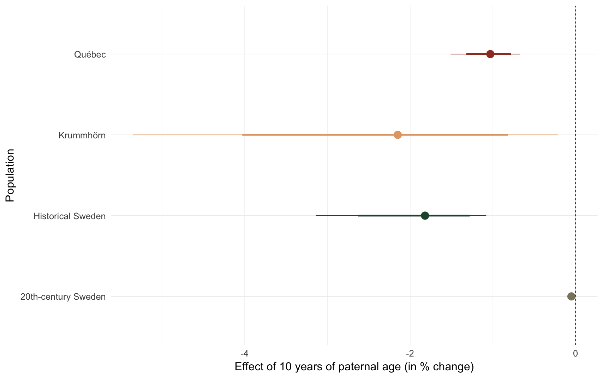
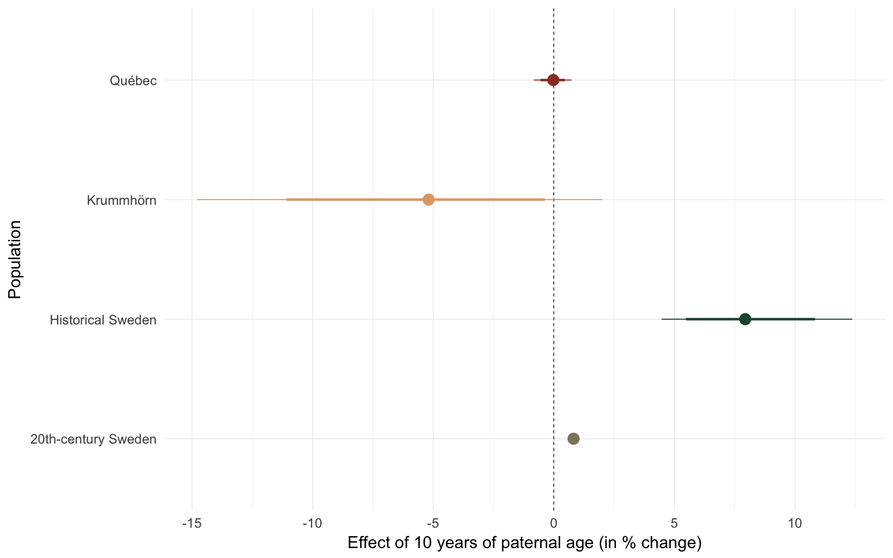
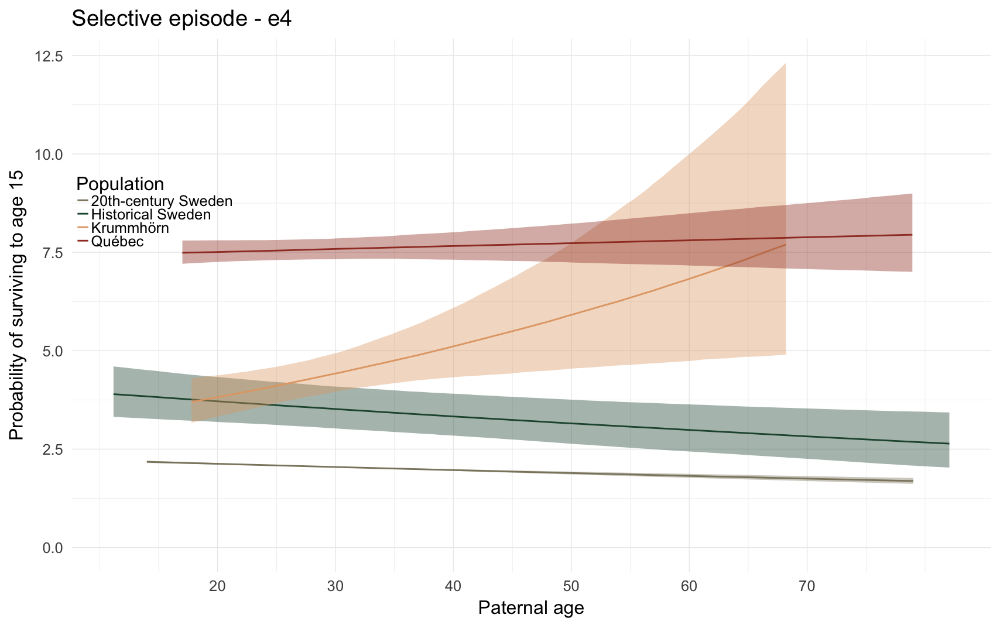

source("0__helpers.R")
opts_chunk$set(warning=FALSE, cache=F,cache.lazy=F,tidy=FALSE,autodep=TRUE,dev=c('png','pdf'), fig.width=17.8,fig.height = 17.8*0.625,out.width='1440px',out.height='900px')Here, we predict the probability that the anchor survives the first year of life. All children born to this father are compared, if their death date is known or their survival can be inferred (from later marriage or children).
episode = "e1_survive1y"
e1 = bind_rows(
"Krummhörn" = get_paternalage_effect(episode, "krmh"),
"Québec" = get_paternalage_effect(episode, "rpqa"),
"20th-century Sweden" = get_paternalage_effect(episode, "swed"),
"Historical Sweden" = get_paternalage_effect(episode, "ddb"),
.id = "Population"
)
e1_plot = ggplot(e1, aes(x = paternalage*10, y = Estimate, colour = Population, fill = Population, ymin = lowerCI, ymax = upperCI)) +
geom_smooth(stat = 'identity', position = position_identity()) +
ggtitle("Selective episode - e1") +
scale_y_continuous("Probability of survival to first year", limits = c(0,1)) +
scale_x_continuous("Paternal age", breaks = c(20,30,40,50,60,70)) +
analysis_theme +
pop_colour + pop_fill +
theme(legend.position = c(0,0),
legend.justification = c(0,0))
e1_plotcomp_plot(episode)
## Population median_estimate ci_95 ci_80
## 1 Krummhörn -2.15 [-5.35;-0.21] [-4.03;-0.82]
## 2 Québec -1.03 [-1.51;-0.67] [-1.32;-0.78]
## 3 20th-century Sweden -0.05 [-0.06;-0.03] [-0.06;-0.03]
## 4 Historical Sweden -1.82 [-3.14;-1.08] [-2.63;-1.28]Here, we predict the probability that the anchor survives the first fifteen of life. All children born to this father who lived at least one year are compared, if their death date is known or their survival can be inferred (from later marriage or children).
episode = "e2_surviveR"
e2 = bind_rows(
"Krummhörn" = get_paternalage_effect(episode, "krmh"),
"Québec" = get_paternalage_effect(episode, "rpqa"),
"20th-century Sweden" = get_paternalage_effect(episode, "swed"),
"Historical Sweden" = get_paternalage_effect(episode, "ddb"),
.id = "Population"
)
e2_plot = ggplot(e2, aes(x = paternalage*10, y = Estimate, colour = Population, fill = Population, ymin = lowerCI, ymax = upperCI)) +
geom_smooth(stat = 'identity', position = position_identity()) +
ggtitle("Selective episode - e2") +
scale_y_continuous("Probability of surviving to age 15", limits = c(0,1)) +
scale_x_continuous("Paternal age", breaks = c(20,30,40,50,60,70)) +
analysis_theme +
pop_colour + pop_fill +
theme(legend.position = c(0,0),
legend.justification = c(0,0))
e2_plotcomp_plot(episode)## Population median_estimate ci_95 ci_80
## 1 Krummhörn 0.06 [-2.69; 2.73] [-1.73; 1.75]
## 2 Québec 0.09 [-0.17; 0.36] [-0.07; 0.26]
## 3 20th-century Sweden 0.03 [0.00;0.06] [0.01;0.05]
## 4 Historical Sweden -0.16 [-0.68; 0.27] [-0.47; 0.12]Here, we predict the probability that the anchor ever marries. All anchors who reached reproductive age (15) are included.
episode = "e3_ever_married"
e3 = bind_rows(
"Krummhörn" = get_paternalage_effect(episode, "krmh"),
"Québec" = get_paternalage_effect(episode, "rpqa"),
"20th-century Sweden" = get_paternalage_effect(episode, "swed"),
"Historical Sweden" = get_paternalage_effect(episode, "ddb"),
.id = "Population"
)
e3_plot = ggplot(e3, aes(x = paternalage*10, y = Estimate, colour = Population, fill = Population, ymin = lowerCI, ymax = upperCI)) +
geom_smooth(stat = 'identity', position = position_identity()) +
ggtitle("Selective episode - e3") +
scale_y_continuous("Probability of ever marrying", limits = c(0,1)) +
scale_x_continuous("Paternal age", breaks = c(20,30,40,50,60,70)) +
analysis_theme +
pop_colour + pop_fill +
theme(legend.position = c(0,0),
legend.justification = c(0,0))
e3_plotcomp_plot(episode)
## Population median_estimate ci_95 ci_80
## 1 Krummhörn -5.19 [-14.79; 2.01] [-11.08; -0.37]
## 2 Québec -0.02 [-0.83; 0.74] [-0.55; 0.46]
## 3 20th-century Sweden 0.82 [0.63;1.01] [0.69;0.95]
## 4 Historical Sweden 7.94 [ 4.47;12.38] [ 5.48;10.83]Here, we predict the number of children that the anchor had. To separate this effect from previous selective episodes, we include only ever-married anchors and control for their number of spouses (interacted with sex, because men tend to have more additional children from further spouses).
episode = "e4_children"
e4 = bind_rows(
"Krummhörn" = get_paternalage_effect(episode, "krmh"),
"Québec" = get_paternalage_effect(episode, "rpqa"),
"20th-century Sweden" = get_paternalage_effect(episode, "swed"),
"Historical Sweden" = get_paternalage_effect(episode, "ddb"),
.id = "Population"
)
e4_plot = ggplot(e4, aes(x = paternalage*10, y = Estimate, colour = Population, fill = Population, ymin = lowerCI, ymax = upperCI)) +
geom_smooth(stat = 'identity', position = position_identity()) +
ggtitle("Selective episode - e4") +
scale_y_continuous("Probability of surviving to age 15", limits = c(0,NA)) +
scale_x_continuous("Paternal age", breaks = c(20,30,40,50,60,70)) +
analysis_theme +
pop_colour + pop_fill +
theme(legend.position = c(0,0.6),
legend.justification = c(0,0))
e4_plot
comp_plot(episode)## Population median_estimate ci_95 ci_80
## 1 Krummhörn 15.62 [ 3.92;29.31] [ 7.67;24.68]
## 2 Québec 0.94 [-1.32; 3.23] [-0.50; 2.47]
## 3 20th-century Sweden -3.82 [-4.64;-2.98] [-4.38;-3.28]
## 4 Historical Sweden -5.36 [-8.92;-1.59] [-7.71;-2.96]paths = c("coefs/krmh/m3_children_linear.rds",
"coefs/rpqa/m3_children_linear.rds",
"coefs/ddb/m3_children_linear.rds",
"coefs/swed/m3_children_linear.rds",
list.files("coefs", full.names = TRUE, pattern = "^e._.+rds$", recursive = T))
i=1
effect_estimates = data.frame()
for (i in seq_along(paths)) {
filename = paths[i]
model = readRDS(paths[i])
if (class(model) == "brmsfit") {
chg = paternal_age_10y_effect(model)[3,]
chg$model = filename
chg$population = str_match(paths[i], "\\w+/(\\w+)/")[,2]
effect_estimates = rbind(chg, effect_estimates)
}
}
effect_estimates$episode = str_match(effect_estimates$model, "([em]\\d)_")[,2]
eps = c("m3" = 'm3. Number of children\n(all)',
"e1" = 'e1. Infant survival\n(all)',
"e2" = 'e2. Survival to 15\n(conditional on e1)',
"e3" = 'e3. Ever married\n(conditional on e2)',
"e4" = "e4. Number of children\n(conditional on e3)")
effect_estimates$episode = factor(eps[effect_estimates$episode], levels = rev(eps))
effect_estimates = effect_estimates %>% arrange(episode) %>%
mutate(
median_estimate = as.numeric(median_estimate),
lower95 = as.numeric(str_split_fixed(str_sub(ci_95, 2, -2), pattern = ';', 2)[,1]),
upper95 = as.numeric(str_split_fixed(str_sub(ci_95, 2, -2), pattern = ';', 2)[,2]),
lower80 = as.numeric(str_split_fixed(str_sub(ci_80, 2, -2), pattern = ';', 2)[,1]),
upper80 = as.numeric(str_split_fixed(str_sub(ci_80, 2, -2), pattern = ';', 2)[,2])
) -> effect_estimates
pops = c("krmh"='Krummhörn', "rpqa" = 'Québec', "ddb" = 'Historical Sweden', "swed" = '20th-century Sweden')
effect_estimates$Population = pops[effect_estimates$population]
effect_estimates$Population = factor(effect_estimates$Population, levels = pops)
episode_comparison = ggplot(effect_estimates %>% filter(!is.na(episode)), aes(x = factor(episode), y = median_estimate, ymin = lower95, ymax = upper95, color = Population)) +
geom_linerange(position = position_dodge(width = 0.4)) +
geom_pointrange(aes(ymin = lower80, ymax = upper80), size = 1, position = position_dodge(width = 0.4)) +
geom_hline(yintercept = 0, linetype = "dashed") +
scale_x_discrete("") +
pop_colour +
scale_y_continuous("Effect of 10 years of paternal age (in % change)") +
coord_flip() +
theme(legend.position = c(1,1),
legend.justification = c(1,1))
episode_comparison